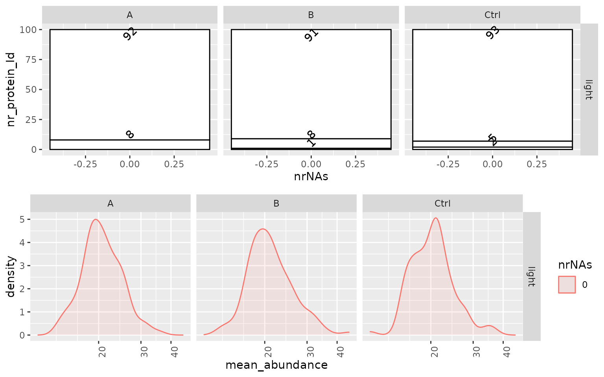
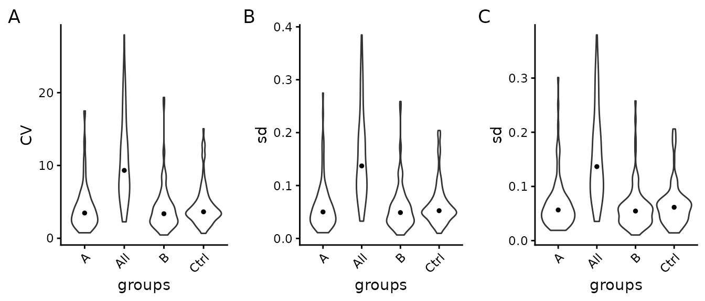
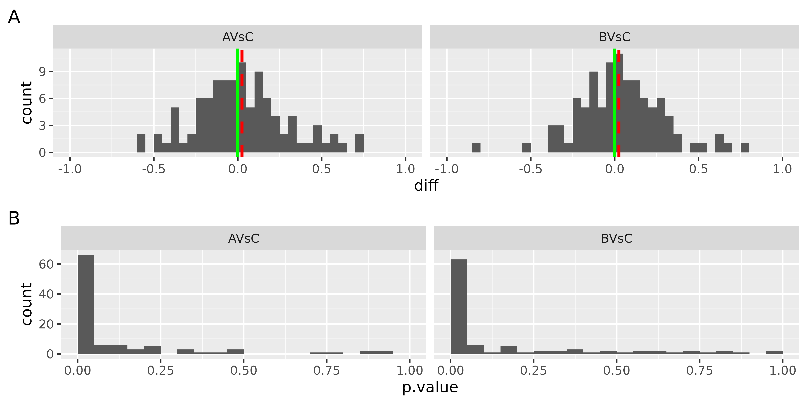
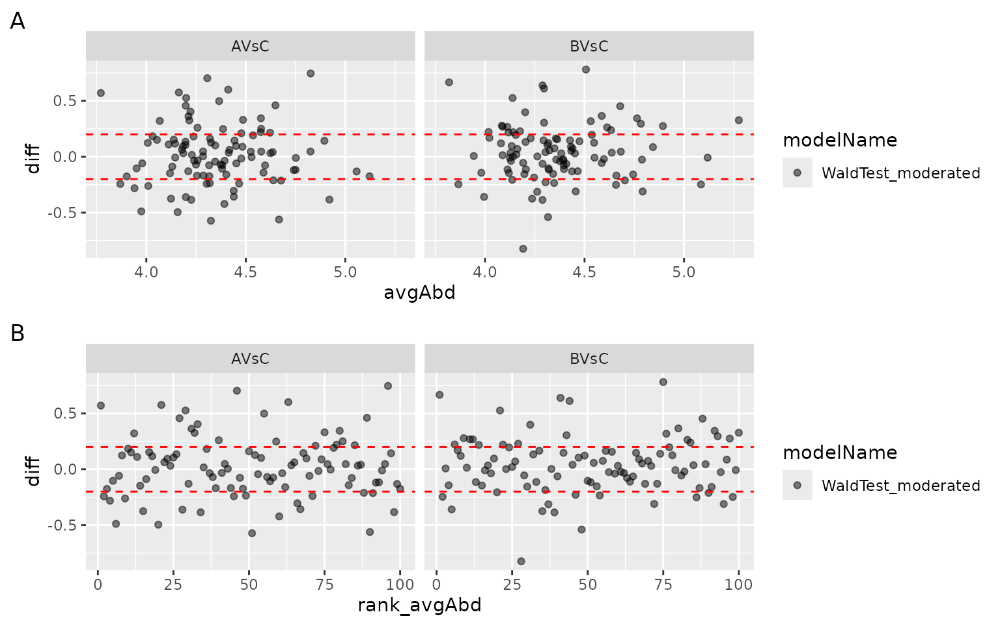

Differential Expression Analysis Quality Control.
Functional Genomics Center Zurich
28 April, 2026
Source:vignettes/DiffExpQC_R6.Rmd
DiffExpQC_R6.RmdMissing Value analysis
The analysis of missing values can be an essential indicator of potential problems and biases in the data. We, therefore, visualize the structure of missing values (missing protein abundance estimate per protein) using various plots. Figure @ref(fig:missingProtein) left panel shows the number of proteins (y) axis with missing values (x-axis) in each group. Ideally, a protein should be observed in all samples within a group (zero missing values). The density plot on the right panel (Figure @ref(fig:missingProtein)) shows the distribution of the mean protein intensity within a group, given missing values. Usually, proteins with zero missing values have a higher average abundance than those with one or more missing values because low abundant proteins might not be detected in some samples. However, if these distributions strongly overlap, this points to a different source of missingness, e.g., large sample heterogeneity or technical problems.
(ref:missingProtein) Left panel - number of proteins with missing values (nrNA), Right panel - distribution of average intensity within group, of proteins with 1 to N missing values.

(ref:missingProtein)
Variance analysis of the data
The left panel A of Figure @ref(fig:SDViolin), shows the coefficients of variations (CV) for all proteins computed on not normalized data. Ideally, the within-group CV should be smaller than the CV of all samples. Panel B of Figure @ref(fig:SDViolin) shows the distribution of the standard deviation for all proteins of log2 transformed data, while the right panel C of Figure @ref(fig:SDViolin) shows it for normalized data. We expect that within-group variance is decreased by data normalization compared with the overall variance (all). However, if normalization increases within group variance compared to overall variance, this indicates an incompatibility of the normalization method and the data.
(ref:SDViolin) Left panel - Distribution of coefficient of variation (CV) within groups and in entire experiment (all), Center panel - Distribution of standard deviations (sd) of transformed data. Right panel - Distribution of protein standard deviation (sd), after data normalization within groups and in entire experiment. The black dot indicates the median CV.

(ref:SDViolin)
The Table @ref(tab:CVtable) shows the median CV of all groups and across all samples (all).
| what | A | B | Ctrl | All |
|---|---|---|---|---|
| CV | 3.47 | 3.37 | 3.64 | 9.32 |
| sd_log2 | 0.05 | 0.05 | 0.05 | 0.14 |
| sd | 0.06 | 0.05 | 0.06 | 0.14 |
Differential Expression Analysis
Typically most of the datasets’ proteins are not differentially expressed, i.e., the differences between the two groups should be close to zero. Figure @ref(fig:densityOFFoldChanges) shows the distribution of differences between the groups for all the proteins in the dataset. Ideally, the median of this distribution (red line) should equal zero (green line). If the median and mode of the difference distribution are non zero, this should be considered when interpreting the differential expression analysis results.
The bottom panel in Figure @ref(fig:densityOFFoldChanges) shows the distribution of the p-values for all the proteins. If the null hypothesis is true, the distribution of the p-values will be uniform. If a subset of proteins is differentially expressed this will result in a higher frequency of small p-values. If there is a higher frequency of large p-values (close to 1) this indicates that the linear model fails to describe the variance of the data; the reasons might be: outliers, a source of variability not included in the model.
(ref:densityOFFoldChanges) Top : distribution of the differences among groups for all the proteins in the dataset. red dotted line - median fold change, green line - expected value of the median fold change. Bottom - histogram of p-values for all the proteins in the dataset. X-axis - p-values, Y-axis - frequency of p-values.

(ref:densityOFFoldChanges)
To identify abundant proteins with large differences or if only low abundant proteins show large fold changes the ma-plot Figure @ref(fig:MAPlot) Panel A can be used. The ma-plot shows the differences between measurements taken in two groups (y-axis) as a function of the average protein abundance (x-axis). More importantly, the observed fold change should not depend on the protein abundance. Figure @ref(fig:MAPlot) panel B plots the difference of each protein against the rank of the average protein abundance.
(ref:MAPlot) MA plot: x - axis: average protein abundance (Panel A) or rank of average protein abundance (Panel B), y - axis: difference between the groups.

(ref:MAPlot)